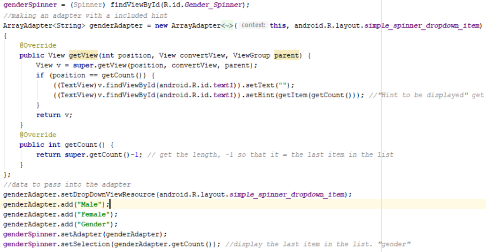
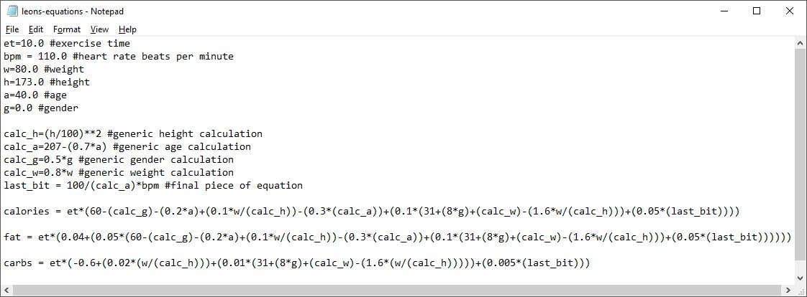
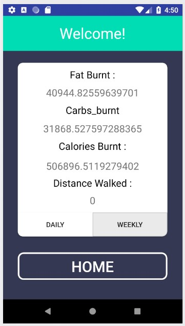
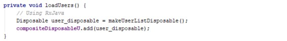
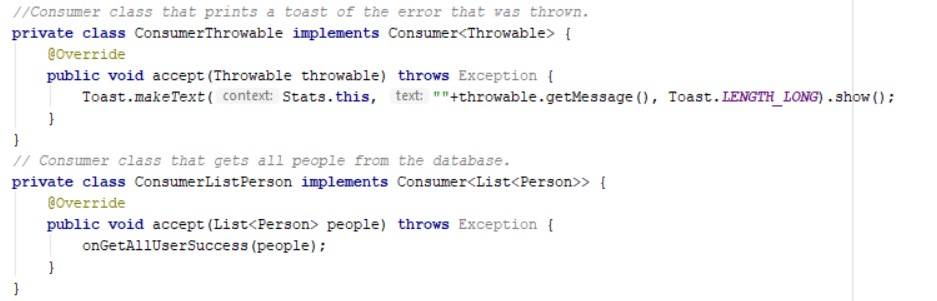

I have been working within the mobile development team during project 1 2018. Use the tabs on the left hand side to navigate through the different sections, or scroll.
Walking with Leon is a fitness app with the goal to help obese people find a personalised workout program that isn’t daunting. The app aims to give people a structured walking regime designed specifically for them. Leon has given us algorithms that will calculate and inform the user of multiple statistics including carbs, fat burnt, and calories burnt. We will obtain the age, height, weight and gender of the user and from there should be able to make them a walk plan to burn 2000 calories a week. The goal is to have their location tracked and their heart beat monitored during the walk so that the user can stay up to date with how they are going both during the walk as well as after they have finished the walk.
I was nominated by my group to design the Walking with Leon app since we didn’t have any outside help from the design school. Below you will be able to see my design process and reasoning behind the design choices I chose for this app, including colour choices and layout while also trying to consider functionality.
Firstly I needed to find some examples of similar apps to study the layouts and see what people with design experience were making to give me a good point to start, below are some of the examples that I liked and used to influence my design.
I really like simple interfaces with one or two standout colours, it prevents the screen from feeling cluttered and loud. So I wanted to use one or two base colours with an injection of colour to make it more vibrant.
My first action was to decide on a colour palette and then mess around with a couple of designs which me and my group could then decide on which was best. Below are some images of the designs that I made and discussed with my team.
I then had to create the apps front end from my designs which were agreed upon amongst the group, I’ve included a small sample of code to show the basic setup of one of the features of the activities, below you can see how to go from one activity to another via a button click:
The above code is a button click handler that is assigned to every button on the Stats.Java class, when the onClick function is called it checks to see which button called it by checking the ID, it then proceeds to run the code within the relevant code block
After the designs were finished and had been approved by my team, and Leon, I began to start working on the front end. I had to replicate the designs using the designer and XML and then add the basic functionality to navigate around the application and make sure the user is able to access everything within the app and that they are able to do so in an easy and understandable way as we want the app to be user friendly as to not deter the user from continuous use.
Below we can see the current “walking” activity, this is the main screen for the app as this is the screen that will be displayed to the user as they are walking. The purpose of this activity is to get a time (in minutes) from the user as to how long they wish to walk for, and then simply start them walking for the specified length of time. The app will have functionality to pause, or stop the walk at any time, with the former option obviously offering an option to resume the walk from where it was paused.
I wanted to have an appealing looking way for people to check their progress, so I incorporated this circular progress bar from an external library. Below I will show how to incorporate the library and proceed to get the progress ring functional within an activity. Firstly, we need to set up the dependencies and projects so that we can get access to the progress ring itself, and it’s functions. To begin with we need to navigate to the gradle scripts in the project viewer. Below I have highlighted the lines that need to be added:
Once this is done, we have to make a reference to the progress ring within the activity we wish to display it. Here we can see how to call the ring on the activity:
This will act like any other XML item in Android Studio, so here you can alter its personal attributes to change the visual aspects of the ring including ring width, ring colour, style of the bar and the size of the text. Now that we have the ring on our activity we can get into the functionality.
Above is the code used to make our progress ring functional, so let’s step through the code and see what’s happening. We first set an OnProgressListener to the progress circle, this however is optional as all this does is present a toast on screen when the ring reaches its max value that we previously set in the XML (100). Further down is were we get into the functionality and we can see that we initialize a new Runnable within a post delay, however we give this runnable method a delay of 0 as we want this to fire instantly, going further down we can see the run() method, firstly we check if the progress is less than 100, if it is we then check to see if the timer is running, so in other words if the user has paused the walk or not, if the walk is active we then use the above equation which was incorporated with help from Adon to work out the current percentage of the walk remaining. We then set the progress value of the progress circle before issuing a 1 second delay. The reason we set a 1 second delay here is so that the app isn’t constantly trying to update the progress value too quickly as this uses unnecessary memory to accomplish nothing, as the time would have only updated after a second.
Another key feature on the walk activity is the countdown timer. This is relatively easy to set up and doesn’t need any external libraries, merely place a textView on the activity and you’re ready to go. For this app we needed three methods for the timer; start, stop, and updateCountDownText. These can be seen below:
Now let’s look at what these methods are doing. The startTimer method is pretty self-explanatory, first we initialize a CountDownTimer variable, we pass it the time left and the countdown interval, so, we pass it how long to run for, and how often to update. It’s important to note that the timeLeft variable is updated continuously further down and is not the same as the total time to countdown from. If you were not going to incorporate a pause feature you could instead use the total time here but if you use the pause function while passing in the totalTime variable, once the timer is resumed it will restart from that time, which is not what we want, we want it to remember the time it was at and resume from that point.
Now we create an onTick method which happens once every second, since we set our countDownInterval to be just that. Within this onTick method we pull out the amount of time left in milliseconds and convert this to an integer and pass it into timeLeft, the variable our timer is checking to see how long to countdown for, this is how we keep a constant track of how long is left on the timer. We then call the updateCountDownText method, which is used to update the text visible on the timer itself, so let’s take a look at how this is accomplished.
This method is used to convert the time that the timer uses, which is in milliseconds to a minute/second system which is far more understandable. Firstly we take the time left, divide it by 1000, then divide this by a further 60 to get the minutes, and we the do a similar equation to get the seconds remaining using the modulo function to acquire the remainder (the time left that didn’t divide evenly into minutes), which is the seconds remaining. We then pass these values into a format function and store the time in a human readable way which is then simply printed out onto the timer textView.
While setting up the signup page, I set the textViews to contain hint data to show the user what needs to be entered in which textView, this data disappears when the user clicks on the text field, however, this was not possible using the basic dropdown box on Android which meant I had to find another way to accomplish this:
Above is how I managed to get the on screen spinner (dropdown box) to display a hint. Firstly we check to see if position is the same length of the adapter (3), if it is we then set the text to nothing to remove the first option in the adapter that would have loaded in, we can then set the hint to be the last item in the list (gender), and then we override the get count function to remove the last item as an option so that although “gender” is one of the options in the list, it will not be displayed. Below we can see this in action:
Here we can see that the spinner now matches the other input on the screen, however I still need to look into how to center the text within the spinner as simply centrally aligning the text didn’t work, this could be done by creating a custom spinner layout file to pass in but there may be more simple solution.
Buttons in Android studio come as a default looking button without any styling (other than the option to change colour and text), to change the buttons to look a specific, more unique way you have to make a custom layout file and pass it into the button either at load time or programmatically. Below I will show you two custom XML layout files I used in this app, and I will show how to change between them when the button is being activated.
Below we can see the two custom button XML layout files, and an example of what these buttons look like:
There, we have two different buttons, one for when the button is idle, and the other to be called when the button is being touched. Now that we have the layout files we can use them. To start I set the button to use the “curved_btn360” on load time by passing the resource into the button as an attribute via the design screen when the button is initially placed onto the activity. Now we want to set up a response so that when the button is clicked, something happens.
above we can see the code to do just that, we initialize an OnTouchListener and apply it to the button in question, we then check if the button is being pressed or not, with Action_Up meaning the button is not being pressed down so this is where we would pass in the regular resource file, and then when the button is being pressed down, we want to pass the button the “curved_btn360white” resource, to pass in a drawable layout file we need to call the buttons “setBackgroundResource” method and then direct it towards the file we want to use, which in our case is the “curved_btn360white” file from within our R.drawable folder as this is where our custom layout files are stored. Additionally we have to change the colour of the text as well to maintain a readable label, this is done by simply calling the buttons .setTextColor method, which usually accepts a colour code such as “Color.BLACK”, however since we wanted to specify a specific colour, we had to parse the value before passing it into Color.
There was numerous custom layout files used within the app, below is an image of the Stats activity where you can see a variety of the custom interface items including custom buttons, aswell as custom imageviews.
Below I have included the code used to generate these custom layouts and an example of what they would look like.
By request from Adon we wanted to give the user an avatar to offer a friendly way to offer encouragement to the user, as well as give it some individuality. We decided that 3 avatars per gender would be sufficient, so we found some cat avatars online and we then decided that we would have a random avatar chosen for the user, based on their gender. Below is the code I used to implement this:
Here we can see it checks if you’re male or female, and then depending on the random number generated it will select one of the 6 avatars and sets it as the avatars image. Unfortunately, I was unable to find a way to successfully store the image names in variables which could then be passed in as a path to the image which would have shortened the code needed significantly. This meant I had to go the long way about it, my initial plan was to depending on their gender generate a string “R.drawable.catm” for males, “R.drawable.catf” for females, and then simply add the randomly generated number onto the end of this string value and then pass this value into the imageView to get the image (since the images were named catm1, catm2, catm3, catf1 etc) however it was unable to recognize the variable as a path, which meant it was unable to generate the memory location and successfully return the file at said location.
The thing that makes this app so special is the Alogirithms that Leon has specially made for this app. These algorithms calculate the fat burnt, carbs burnt, and calories lost. I was given a text file containing these algorithms, which can be seen below:
I was then required to input these algorithms into the app so that they could be called when needed to do the necessary equations. I decided the best way to implement this was to create an Algorithms class to contain them which can them simply be called by an instance of the class in whichever activities need. Below is the Algorithms class I made containing Leon’s Algorithms for calculating fat loss, calories burnt and carbs burnt:
Here we can see in the “Stats” activity where we need to reference these algorithms to get the returned values to present to the user once they’ve finished their walk:
To start with, we need to get the data passed to us via the intent stored into variables that we can use. The intent is passing through 2 values, one is the time the user exercised for, and the other distance they travelled, this is taken from the total steps the user took, multiplied by the estimated step length for someone their height and then converted into metres. Once we have this data and have everything converted to the right variable type we need to create an instance of the Algorithms class, here, mine is called “inst”, we then create a variable of type double, and we call the Algorithm classes methods passing in the required values to get the returned amount stored within these variables. We then convert these variables into string variables so that they can be wrote out to the textViews, and then we do just that, presenting the data to the user regarding the walk they have just undertaken. Here we can see the data being displayed:
note: Distance = 0 because emulator can’t track movement/footsteps so can’t calculate a distance.
Throughout this app I had to reference user data which is stored in the database that Pierre created, this meant that I had to go through his database classes and figure out what was happening so that I could extract the necessary methods to get the users from the DB for example (most common usage).
The below images are the code I used to set up the Database within my Stats activity to retrieve the users that are currently stored in the database, We can then access them and withdraw required data that we need to pass into the algorithms to work, things like, height, gender, and weight. So let’s walk through this code and see how it works.
Here we can see my “setupAct” method, this is called in the onCreate method for the stats activity; this code could go in the onCreate however I find it cleaner to call a method rather than fill the onCreate with code. First we need to get instances of both the PersonDatabase and the personRepository, after this is done we need to create a new CompositeDisposable for the user, we then call the loadUsers() method which will now work on retrieving the users for us and storing them in a list.
When loadUsers is called we call the makeUserListDisposable() method and then store the returned value within a disposable variable (user_disposable, in this case) which is later passed into the compositeDisposableU variable we initialized previously, this value should contain the list of all the users in the database when filled, but lets take a look at just how it fetches the data.
Here we create a disposable variable called temp, we call the getAllUsers() method from the personRepository that Pierre set up, the contents of temp is what we will be returning to our user_disposable variable that called this method from loadUsers(). We also create two consumer variables: personList, and consumerThrow.
personList gets the data from the ConsumerListPerson() method it calls which can be seen above, this is then passed into temp via the subscribe function along with a toast prompt stored within consumerThrow.
ConsumerListPerson() which is activated when called on personList, then calls the onGetAllSuccess() method and passes in the data stored within the “people” variable, which contains the users from within the database from the getAllUsers() method, then, finally, we pass this data into the user_list, this is a global list to store the data in so it is accessible from anywhere within the activity, this can all be seen below.
Once the list is filled with the data we need to get some data from the list so that we can use it. To get a specific user from the list we simply call the .get() method while passing in an index, in the example above I used the very first user (0). Now for what I was doing I needed to get the users gender to run a check, to grab a specific value we can use one of the many get methods which can be seen below from within the personRepo which can be seen below
So, to get the users gender we need to use the command “user_list(0).getGender();”
After the original designs were made as a template within android studio, I then needed to make sure that the app would run as intended on multiple devices with different screen sizes, resolutions and dpi settings. There are many different dpi settings for mobile devices varying from LDPI, MDPI, HDPI, XHDPI, XXHDPI, XXXHDPI and there needs to be a layout file created for each case. This effects how they are laid out on the screen, if you used an XXXHDPI layout on an MDPI device for example the interface would be unusable because the layout is expecting to need to cover 4x the area and similarly if an MDPI layout file is used on and XXXHDPI device the user interface would be tiny. Below is a list of dpi settings for Android phones:
Even though the complete range of Android dpi sets start at LDPI, I figured these are a lot older and very uncommon in this day and age so I decided to start making layouts from MDPI through to XXXHDPI which would cover the vast majority of phones on the market making our app available to a wide audience.
Below we can see what happens when a layout file is not suited for the devices dpi that it is running on compared to a layout file that is designed for a specific dpi, below is an XXXHDPI phone running without an XXXHDPI layout file (left) and on the right is what it should look like:
After creating layout files for every activity to work with all devices (MDPI, HDPI, XHDPI, XXHDPI, and XXXHDPI) We completely remove the visual issues which could previously be seen regardless of which phone is used. The layout files are created with a strict naming convention (activity_layout_name-dpi / stats_layout-XXHDPI) so that the phone can auto detect which layout file needs to be used for a specific device and so we get a seamlessly running app regardless of the device used.
Here we can see the designs I made for the Showcase app, I wanted to again use a simple colour scheme that wasn’t too intrusive, I decided to go with a base of grey/white as this is an easy to look at colour scheme and then added the Polytech blue as the accent colour to brighten it up a bit and draw your eye to the headings and relevant information.
This is only a basic draft of the designs as I was quickly moved off of this app and onto Walking with Leon so I didn’t get very far, I made these diagrams and made the app in Android studio so the front end functionality is there, it is just a shell of what is shown in the designs since it only has basic activity to activity functionality to navigate the currently empty app.
During the 2018 midyear showcase I was given a lot of feedback on the app from the attending guests and even some fellow students. One of the main things I noticed and discussed was that the app wasn’t as user friendly as I would have liked, which as the designer you take for granted as you have a full understanding of how things work. I need to rework some of the UI’s so that they’re clearer to the user as to what they are meant to be doing, and how they can go about doing it.
There was some problems with the layout files in the app where on the emulators the layouts and designs would appear as desired but when ran on actual phones the layouts wouldn’t scale properly and would leave the app looking quite poor, I need to do some more research on the different layouts needed as even having layout files for HDPI, XHDPI, XXHDPI, and XXXHDPI was not enough, even on phones with these designated layouts (including mine).
Another issue that was pointed out to me is that when we show the values after the user has undertaken the walk, there needs to be a unit of measurement with the value returned from the algorithm otherwise people don’t know what the data is actually telling them.
The biggest issue I found was that people would open the walk activity and expect to just start walking without inputting a time to walk for, I think the best solution for this would be to instead ask the user how long they wish to walk for before the walking activity loads, so possibly activate a pop up fragment when the walk button is pressed from the menu, take in a desired walk time via user input, and then pass this time on to the walk activity.
Upon reflection there is definitely stuff I would do differently if I could, I found myself often getting a feature working but not properly implemented, for example I got the Timer and the progress bar working but not set up on the correct activity with the necessary user input (to get the time to walk for) and instead moved onto working on fetching data from the database to pass into the Algorithms. In the long run this left me with a lot of little jobs to get the flow and functionality for the app working as intended. It would have been more efficient and easier to follow what is finished and what isn’t if I completed every task to 100%, I just found myself avoiding the design aspect of the app after spending a long time on the designs of apps at the start of Project 1.
Another thing that I wish I did was more day to day or week to week documentation so that I could record the bugs I came across so that if I ran into the same error I would be able to resolve it quicker, while also offering help to people in my group who may have found themselves encountering one of these errors.
On the 1st of May I attended the reverse pitching session hosted by Thomas. There was a problem presented to do with tracking shipping containers and the want for automated shipping forms accessible to the user when needed online. The company in question is Agility, you can visit their page here: https://www.agility.com/en/network/new-zealand/
The discussed problems:
Instant Pricing – Due to the complex nature of moving goods from A>B and the various components sometimes pricing can take days. We would like to be able to provide instant pricing, in particular to focus on costs to and ex Australia over various modes.
Notice of delays – International movements are constructed by integrating numerous and various service providers & agencies. We would like to explore ways of finding out when these occur within as shortest time frame as possible, as the ability to pass this information onto our clients.
E Documents – When a business moves fright internationally there are often many documents and declaration that need to be provided to various interested parties. These are often manually created. We would like to see a e-document package that a client could upload their logo or letter head and “a system or program” would create all necessary documents relevant for a particular shipment.
Real time tracking – We believe that there might be a demand for real time GPS location on freight movements. We would like to find out about the costs for this, the practicality, and how this could work.
The presenter talked about his company of shipping overseas to countries like India, Singapore etc and wanted to simplify his process so that the user could request the forms needed for a specific shipment. After discussions with him it seemed quite hard to automate this whole system and out of our depth. We discussed multiple different simpler solutions such as having dropdowns containing countries and items of the top 10, the goal of this is that if you are intending to do one of the more recurrent shipments such as shipping materials to India this will be easily available and rather than replace the need for manual input this will only require manual input on less common shipments to less popular destinations etc.
We then talked about viable ways for him to track his containers in transit to report back to the customer so they can be updated as to where there good are located at any time. We discussed how real time tracking would be rather expensive and that there could be a similar process used to that of NZPost etc where it updates the user at checkpoints along the journey but this required manual updates which he wanted to avoid. An alternate option we discussed was contacting the ship owners to use their tracking data similar to how you can track flights and this seemed to be the most viable option as having trackers in a metal container would prevent the signal from escaping and this would require no additional hardware to implement.